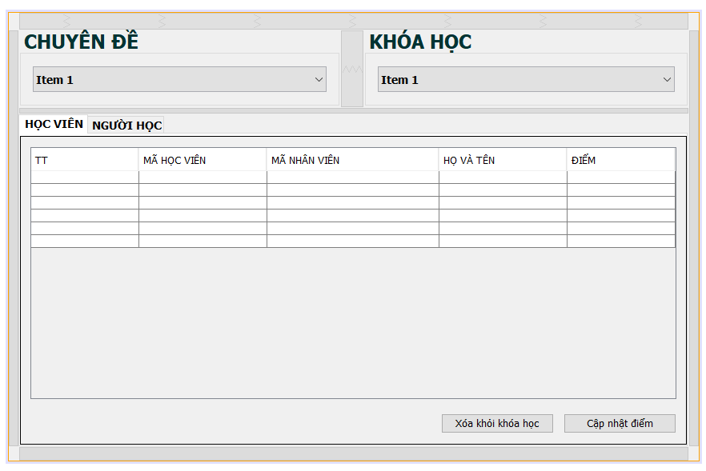
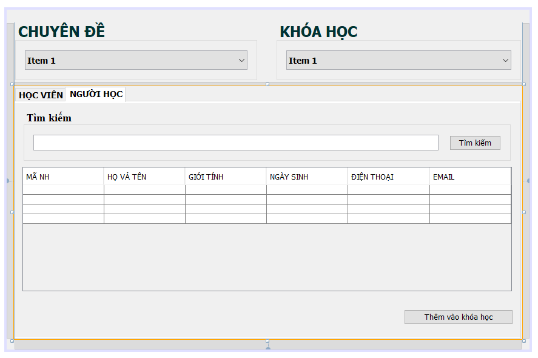

Tab 1

Tab 2

Một chuyên đề có nhiều khóa học
-tìm khóa học chỉ cần thay đổi chuyên đề ở combobox chuyên đề
Một khóa học có nhiều người học
-tìm người học chỉ cần thay đổi khóa học ở combobox khóa học
Thêm người học khóa học đang chọn vào bảng học viên: chọn người học trực
tiếp trên bảng có thể giữ nút ctrl để chọn nhiều dòng trong bảng. chọn
xong ấn nút [thêm vào khóa học]
xóa học viên khỏi khóa học đang chọn ở bảng bảng học viên: chọn người học trực
tiếp trên bảng có thể giữ nút ctrl để chọn nhiều dòng trong bảng.
xong click nút [xóa khỏi khóa học] học viên được xóa sẽ trở về bảng người học tab2
Cập nhật điểm
chọn trực tiếp vào cột điểm của học viên click đúp vào để chỉnh sửa. chỉnh sửa xong click nút Cập nhật điểm
nút: [tìm kiếm]
: tìm kiếm thông tin của người học theo tên người học